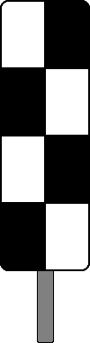

Signalbuch-Online
Signal Ne 4 – Schachbretttafel
Das Hauptsignal steht - abweichend von der Regel - an einem anderen Standort.
Eine viereckige, schachbrettartig schwarz und weiß gemusterte Tafel.

Das Signal ist eine hohe rechteckige Tafel; bei beschränktem Raum ist eine niedrige Tafel aufgestellt.
Das Signal ist in der Regel an durchgehenden Hauptgleisen aufgestellt; an sonstigen Hauptgleisen kann es aufgestellt sein. Das Signal steht in Höhe des Hauptsignals.
Weitere Hauptsignale in gleicher HöheDas Signal darf nicht aufgestellt werden, wenn durch weitere Hauptsignale in gleicher Höhe die Zuordnung nicht eindeutig ist.
Ein unmittelbar rechts vom zugehörigen Gleis stehendes Signal Ne 4 weist auf ein Hauptsignal hin, das entweder
- unmittelbar links
- mehr als 10 m rechts
- ein Gleis weiter rechts
vom befahrenen Gleis steht.
Ein unmittelbar links vom zugehörigen Gleis stehendes Signal Ne 4 weist auf ein Hauptsignal hin, das unmittelbar rechts vom befahrenen Gleis steht. Ein unmittelbar links vom zugehörigen Gleis stehendes Signal Ne 4 weist im Geltungsbereich der DS 301 auch auf ein Sperrsignal hin, das für Fahrten entgegen der gewöhnlichen Fahrtrichtung unmittelbar rechts am befahrenen Gleis steht.
Bei Bauzuständen kann das unmittelbar links vom Gleis stehende Signal Ne 4 auf ein Hauptsignal hinweisen, das ein Gleis weiter rechts vom befahrenen Gleis steht. Dies ist in der La oder bei NE-Bahnen in einer betrieblichen Anweisung des Betriebsleiters bekannt gegeben.
Bei Bauzuständen und wenn der Betrieb es erfordert, ist das Signal rückstrahlend oder beleuchtet.
Zum Öffnen der Galerie bitte Bild anklicken!